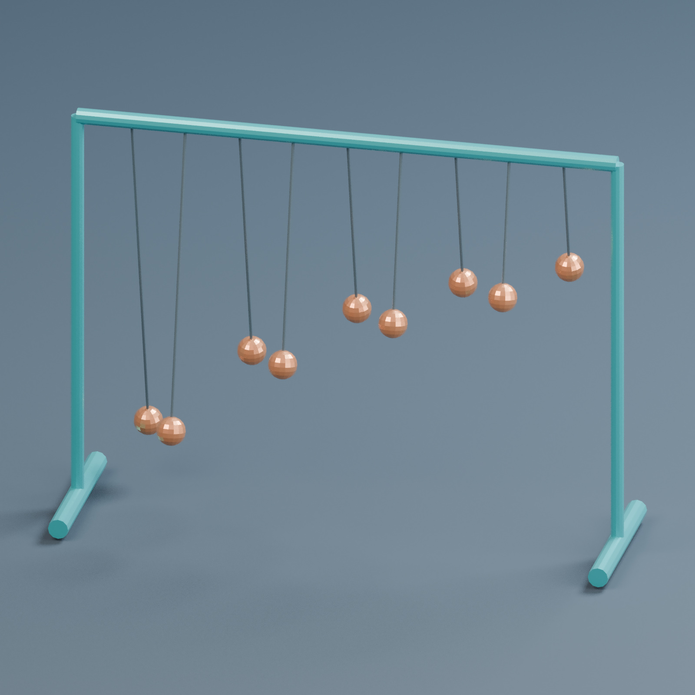
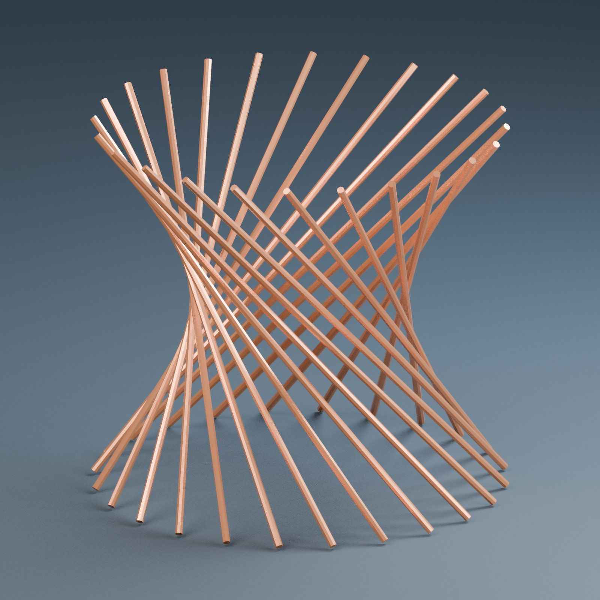

01 screw fan

A helicoid sampled using straight slats; count, total rise and twist control the generated form.
Evidence 80/100 · Visual match unmeasured5 distinct grammar versions
A helicoid sampled using straight slats; count, total rise and twist control the generated form.
Evidence 80/100 · Visual match unmeasured
A string-saddle form study for exploring ruled surfaces and procedural repetition.
Evidence 80/100 · Visual match unmeasured
A family of pendulum-like elements illustrating repeated arrangements and variation.
Evidence 80/100 · Visual match unmeasured
A lantern form study with constant-length construction members.
Evidence 80/100 · Visual match unmeasured
A reduced lantern grammar illustrating economical representation of the same design idea.
Evidence 80/100 · Visual match unmeasured